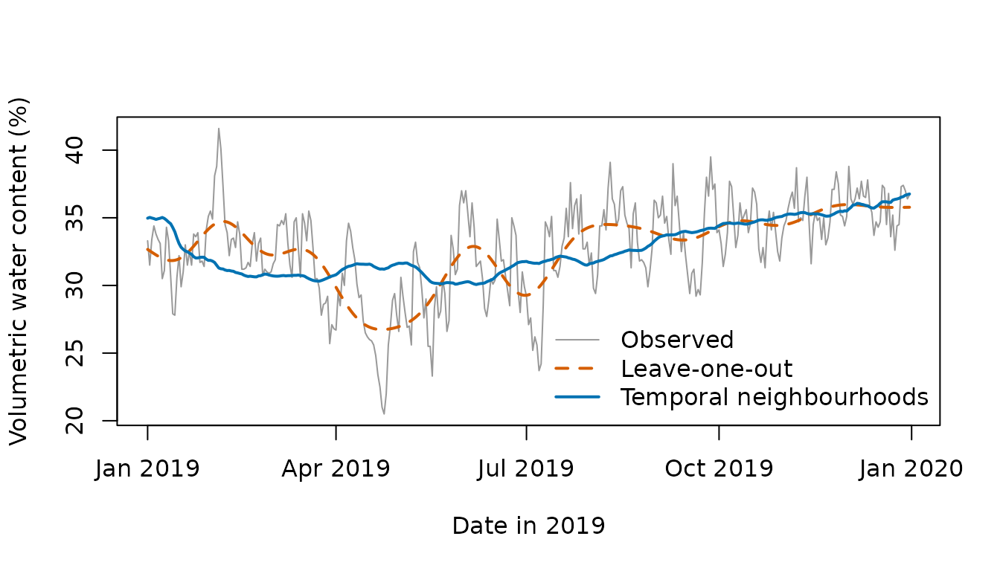

library("naboer")
library("tibble")
library("mgcv")
have_tsibble <- requireNamespace("tsibble", quietly = TRUE)
if (have_tsibble) {
library("tsibble")
}Choose smoothness for a time series
We want a smooth that describes how soil moisture changed through 2019 at Balruddery, near Dundee. Soil moisture on successive days is often similar. A leave-one-out fit can use neighbouring days to predict a held-out day, which can favour a smooth that follows short-term fluctuations. We will compare that fit with one that also leaves out nearby days during smoothness selection.
Read the 365 daily measurements from the COSMOS-UK monitoring
network. The date column defines the neighbourhoods. The
number of days since 1 January is the predictor in the model, and
vwc is the volumetric water content as a percentage.
Contains data supplied by UK Centre for Ecology & Hydrology. COSMOS-UK
data and licence.
soil <- read.csv(
system.file("extdata", "balruddery-2019.csv", package = "naboer", mustWork = TRUE)
)
soil$date <- as.Date(soil$date)
soil$day <- as.numeric(soil$date - min(soil$date))Make one fold per day. In each fold, leave out the target day and up to 20 days on either side, and score the prediction for the target day alone. This window follows the example in David L. Miller’s article. The appropriate window for another series depends on how long residual dependence persists. Miller’s time-series example.
soil_folds <- neighbourhoods(soil,
index = date, temporal = temporal_window(time_span(20, "days"))
)Check a fold in the middle of the year. To score 2 July, the fit leaves out 12 June to 22 July inclusive.
soil_data <- fold_data(soil_folds)
july_fold <- match(as.Date("2019-07-02"), soil_data$date)
range(soil_data$date[omission_indices(soil_folds, july_fold)[[1]]])
#> [1] "2019-06-12" "2019-07-22"Fit the same smooth twice with mgcv. With nei omitted,
method = "NCV" uses leave-one-out cross-validation. For the
second fit, export the temporal folds with as_nei() and
supply that design as nei. Both fits use the same data and
basis, so the change is in how the smoothing parameter is selected.
soil_loo <- gam(vwc ~ s(day, k = 20),
data = soil_data, method = "NCV", na.action = na.fail
)
soil_nei <- as_nei(soil_folds, data = soil_data)
soil_ncv <- gam(vwc ~ s(day, k = 20),
data = soil_data, method = "NCV", nei = soil_nei, na.action = na.fail
)Compare the effective degrees of freedom (EDF) of the smooth. Higher EDF allows the curve to follow more fluctuations in the data.
c(
`Leave-one-out` = summary(soil_loo)$s.table[1, "edf"],
`Temporal neighbourhoods` = summary(soil_ncv)$s.table[1, "edf"]
)
#> Leave-one-out Temporal neighbourhoods
#> 17.397113 3.171146Here the neighbourhood fit follows the broader changes in moisture over the year. The lines are fitted values from the final models, which both use all 365 observations. The two-sided window is for selecting a smooth for the observed period. Forecasting has a different information cut-off, described later in this article.
palette <- c("#D55E00", "#0072B2")
plot(vwc ~ date, soil_data, type = "l", col = "grey60",
xlab = "Date in 2019", ylab = "Volumetric water content (%)"
)
lines(soil_data$date, fitted(soil_loo), col = palette[1], lwd = 2, lty = 2)
lines(soil_data$date, fitted(soil_ncv), col = palette[2], lwd = 2)
legend("bottomright",
legend = c("Observed", "Leave-one-out", "Temporal neighbourhoods"),
col = c("grey60", palette), lty = c(1, 2, 1), lwd = c(1, 2, 2), bty = "n"
)
Multiple time series
When you have several time series, decide whether observations at the same time in different series should be held out together. For example, two monitoring sites might respond to the same weather. You might want to hold out both sites to assess predictions for a new period.
Set up the time series
Create daily records for two sites. In these examples,
site is the key that identifies each series and
date is the time index. Supplying a key keeps track of the
series. Use .by separately when the data contain
independent domains and the design should keep neighbourhoods within
them.
Leave out observations near each target
Use neighbourhoods() to assess one row per fold. A
two-day window leaves out the target and any observations up to two days
before or after it. Here within = "key" restricts that
window to the target’s site. Use within = "domain" to
include nearby dates from both sites when they belong to the same
domain.
f <- neighbourhoods(x,
key = site, index = date, within = "key",
temporal = temporal_window(time_span(2, "days"))
)Inspect the rows omitted in fold 3. The target is 3 January at site a, so the model leaves out 1 to 5 January at that site and scores only 3 January.
fold_data(f)[omission_indices(f, 3)[[1]], ]
#> # A tibble: 5 × 2
#> site date
#> <chr> <date>
#> 1 a 2024-01-01
#> 2 a 2024-01-02
#> 3 a 2024-01-03
#> 4 a 2024-01-04
#> 5 a 2024-01-05Choose how to measure a span
- Elapsed time is measured in seconds. An elapsed day is 86,400 seconds. Numeric time indices are also interpreted in seconds.
-
Calendar time follows the local calendar. Across a
daylight-saving change, a calendar day can be 23 or 25 hours. When
shifting by months or years, a date that would fall past the end of a
month moves to its last day. Calendar shifts preserve the time of day,
including fractional seconds, subject to the chosen daylight-saving
rules. naboer uses
clockfor this calendar arithmetic. -
Observation counts measure a span in recorded rows.
Blocks start at the first row of each series, and neighbourhoods count
away from the target. Use
time_span(2, "observations")for a span of two rows and setwithin = "key". Resolve tied times in each series before using counts. Time-based windows can include observations with the same timestamp.
Temporal windows include observations on both boundaries. Elapsed
windows allow for rounding when calculating time differences at a
boundary. When calendar arithmetic would reach a repeated or skipped
local clock time, the calculation fails by default. Use the
ambiguous or nonexistent argument of
time_span() to choose how to resolve those times. A
zero-length shift preserves the original timestamp, including which
occurrence of a repeated time it represents. For date-times, calendar
arithmetic uses the time zone of the index even if supplied origins are
displayed in a different zone.
Hold out whole periods
To assess a new period at both sites, use
temporal_folds() with within = "domain". Start
the four-day blocks on 1 January.
blocks <- temporal_folds(x, time_span(4, "days"),
key = site, index = date,
within = "domain", origin = as.Date("2024-01-01")
)The fold summary shows three blocks of eight assessment rows each, four from each site.
as_tibble(blocks)
#> # A tibble: 3 × 6
#> fold n_assessment n_omission n_analysis n_buffer omitted_fraction
#> <chr> <dbl> <dbl> <dbl> <dbl> <dbl>
#> 1 1 8 8 16 0 0.333
#> 2 2 8 8 16 0 0.333
#> 3 3 8 8 16 0 0.333A time-based block includes its start and excludes its end, so 5
January belongs to the second block. If you omit origin,
each domain or series starts at its earliest observation. Count-based
blocks start at the first observation of each series and take no
origin argument.
Assess forecasts using information available at the time
A forecasting fold has a cut-off called the origin. Here the model can use records through the origin. The gap is the period after the origin when no predictions are scored. The horizon is the period immediately after the gap when predictions are scored. Later records, including those beyond the horizon, are left out of training.
Generate the first origin three elapsed days after the first observation. Move the origin forward by two days at a time, the default step when the horizon is two days. With multiple series in one domain, time-based forecasts use a shared origin so neither site’s future records enter the fit.
forecast <- forecast_folds(x,
initial = time_span(3, "days"),
horizon = time_span(2, "days"), gap = time_span(1, "days"),
key = site, index = date
)Inspect the first fold. Both sites contribute training records from 1 to 4 January. The records on 5 January form the gap, and the predictions for 6 and 7 January are scored.
forecast_data <- fold_data(forecast)
forecast_data[analysis_indices(forecast, 1)[[1]], ]
#> # A tibble: 8 × 2
#> site date
#> <chr> <date>
#> 1 a 2024-01-01
#> 2 a 2024-01-02
#> 3 a 2024-01-03
#> 4 a 2024-01-04
#> 5 b 2024-01-01
#> 6 b 2024-01-02
#> 7 b 2024-01-03
#> 8 b 2024-01-04
forecast_data[assessment_indices(forecast, 1)[[1]], ]
#> # A tibble: 4 × 2
#> site date
#> <chr> <date>
#> 1 a 2024-01-06
#> 2 a 2024-01-07
#> 3 b 2024-01-06
#> 4 b 2024-01-07Training starts with the first observation by default. For a fixed
training history, set window = "sliding" and supply a
lookback span. Training then uses times strictly after
origin - lookback and through the origin.
Generated origins require the horizon to end on or before the last
observed time in the domain. Series can end earlier or have gaps, and
generated horizons with no observations to assess are skipped. To choose
cut-off dates yourself, supply origins in place of
initial. Each explicit origin must leave at least one
training and one assessment row in every domain.
When both initial and step are calendar
spans measured in months or years, origins are calculated from the first
observation’s date to keep month-end and leap-day adjustments from
carrying over to later origins. The same anchoring applies when both
spans use calendar days or weeks. The daylight-saving rules in
initial apply to the first origin, and those in
step apply to later origins.
Forecast across separate domains
Observation-count forecasts require a single series per domain. For
related series recorded at different times, use elapsed or calendar
spans so there is a common time cut-off. Forecasting with
within = "key" also requires a single series per
domain.
Setting .by = site gives each site its own forecast
schedule and leaves records from other sites available for fitting,
including their later records. If the same cut-off should apply to both
sites, keep them in one domain as above.
Refit models at forecast origins
When refitting at each origin, construct predictors and estimate missing values using only information available at that time. Forecast folds often leave out many observations. If you use neighbourhood cross-validation (NCV) instead of explicit refitting, compare the approximation with exact refits for your model and forecast folds. See the comparison with exact refits.
Use a tsibble
With an ordinary tibble, supply key and
index explicitly. With a tsibble, naboer reads them from
the object. If you have tsibble installed, convert the
example data and use within = "key" to make four-day blocks
separately for each site.
series <- as_tsibble(x, key = site, index = date)
temporal_folds(series, time_span(4, "days"), within = "key")
#> <naboer_folds: temporal>
#> 24 observations; 6 foldsFor tsibble indices that represent weeks, months or quarters,
temporal calculations use the first date of each period.
fold_data() keeps the original index class.